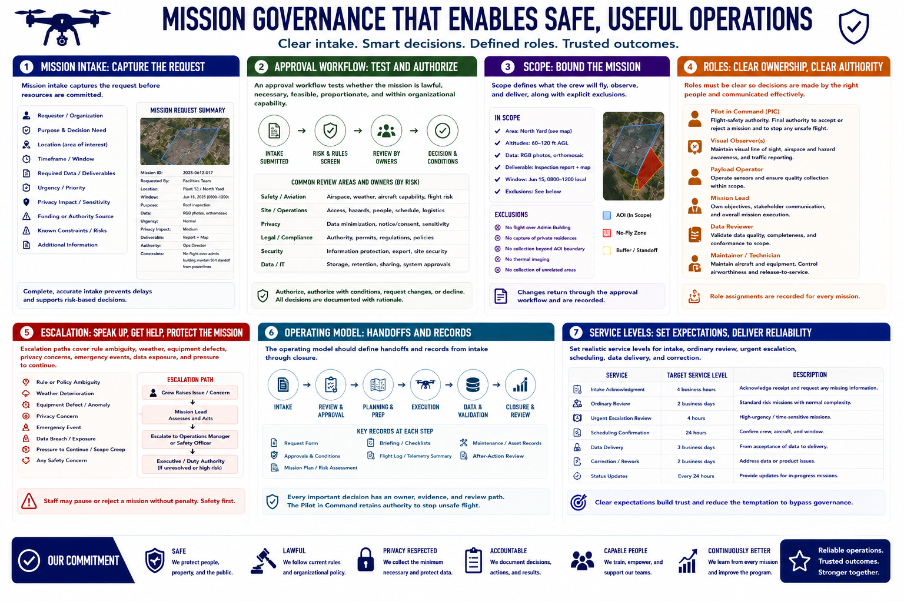

Mission Governance and Operating Model
Connecting to LMS... Progress: in progress

Narration
Mission intake captures the request before resources are committed. It should identify the requester, purpose, decision need, location, timeframe, required data, urgency, privacy impact, deliverable, funding or authority, and known constraints.
An approval workflow tests whether the mission is lawful, necessary, feasible, proportionate, and within organizational capability. Safety, aviation, site, privacy, legal, security, and data owners may review different parts according to risk.
Scope defines what the crew will fly, observe, and deliver, along with explicit exclusions. A bounded scope prevents mission creep and unnecessary collection. Changes should return through a documented approval path rather than being improvised during flight.
Roles must be clear. The pilot in command holds flight-safety authority. Visual observers support airspace and hazard awareness. Payload operators manage collection. Mission leads coordinate objectives. Data reviewers validate products. Maintainers control airworthiness records.
Escalation paths cover rule ambiguity, weather, equipment defects, privacy concerns, emergency events, data exposure, and pressure to continue. Staff need permission to pause or reject a mission without being overruled by scheduling pressure.
The operating model should define handoffs and records from intake through closure. Governance succeeds when every important decision has an owner, evidence, and review path, while the pilot retains the authority to stop unsafe flight.
Set realistic service levels for intake, ordinary review, urgent escalation, scheduling, data delivery, and correction. Clear expectations prevent requesters from bypassing governance because they assume the approved process will be too slow.